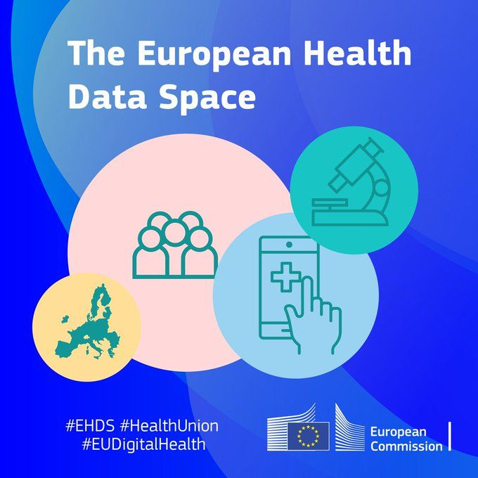

Before we start: in one sentence — what do you think the EHDS is?
A common set of EU rules that lets health data follow the patient for care — and be reused, under strict conditions, for research, innovation and policy.
Recording health data (topic 1)→Sharing it for care (primary use)→Reusing it for research & policy (secondary use) — today

EIT Health Think Tank (2024), ch. 4–5 · Regulation (EU) 2025/327 · EC factsheet (2024)
What the EHDS is
One framework. Two roads.
Is the EHDS a database? Vote: yes or no.
Road 1 · CareHer data follow herWho can use her data?Which infrastructure carries it?Which rule applies?Primary useMyHealth@EU — the care infrastructureA doctor abroad can read her medication list and lab resultsSofia can open, download and correct her own recordPrescriptions work across borders
Sofia’s record
Glucose 7.0 mmol/L · fasting · 14 Jan
Fictional example
Road 2 · ReuseHer data help answer bigger questionsWho can use her data?Which infrastructure carries it?Which rule applies?Secondary useHealthData@EU — the reuse infrastructureResearch, innovation, policy-making, public healthOnly through a permit from a public Health Data Access BodyOnly inside a secure environment; only results come out
Answer — after the vote
Answer: no. The data stay with hospitals, registries and labs. The EHDS is the rulebook plus the connections between them — built on top of the GDPR, not instead of it.
Who benefits — European Commission factsheet (2024): ≈ €5.5 bn saved in care, ≈ €5.4 bn from reuse, over ten years (intended, not guaranteed)
Citizenscontrol of their data
Professionalsaccess to records
Researchersgoverned data access
Policymakersevidence for decisions
Industryroom to innovate
Regulation (EU) 2025/327 · EC factsheet (2024)
Key idea 1 of 3 · Purpose
One record. Care or research?
Shout it out: care, or research?
Primary use — care of the person the data are aboutSecondary use — a question about many people
Sofia, 52 · Amsterdam
Her GP records: glucose 7.0 mmol/L · fasting · 14 Jan
Fictional example
On holiday in Spain, an emergency doctor opens her medication list.Primary use — care of Sofia · MyHealth@EU
Sofia checks her own results on her phone.Primary use — her own access is a right
A university studies glucose trends in 50,000 patients.Secondary use — a population question · HealthData@EU
The health ministry decides where to open diabetes clinics.Secondary use — policy-making counts too
An insurer wants her data to set her premium.Not permitted — insurance, advertising and harm to the person are banned
Purpose decides the rules — not where the data travel.
Regulation (EU) 2025/327 · EC factsheet (2024) · Fictional example
Key idea 2 of 3 · Governed access
Can a researcher just download the data?
Hands up — what leaves the building? (A) the dataset · (B) a list of patients · (C) only the results
Health Data Access Body (HDAB) — public gatekeeper: yes or noSecure processing environment — the locked reading room
1FindA catalogue shows what exists, where, and how good it is. Nothing is requested yet.Primary-care diabetes cohort · NL · 2015–2024 · quality label ★★★☆ · pseudonymised
2ApplyA public health data access body in each country checks purpose and need, then issues a permit.Permit · purpose: research · data: minimised · valid 12 months
3AnalyseWork happens in a secure processing environment — a reading room: notes yes, the book stays.Insidepersonal data · analysis · researcherOutsideraw data — blocked
4Take outOnly checked, non-personal results leave. The data stay.n = 1,240 · mean fasting glucose 6.8 mmol/L · reviewed ✓
Answer: C. The data stay in. Only reviewed results come out.
Regulation (EU) 2025/327 · teaching illustration
Key idea 2 of 3 · Rights & safeguards
Myth or fact?
Vote with your hands before we flip each card.
“The EHDS is one big EU database.”MythData stay with hospitals, registries and labs. The EHDS is the rulebook plus the connections between them.
“If my name is removed, my data are anonymous.”MythThat’s pseudonymisation: a code replaces the name and a key can link it back, so it’s still personal data. Anonymisation means nobody can be identified any more.
“I can opt out of my data being reused.”Fact(Mostly.) You can opt out of secondary use; a few public-interest exceptions remain.
“Any company can buy access to the data.”MythOnly listed purposes, through a permit. Insurance pricing and advertising are banned outright.
“This already applies today.”MythSo far. In force since March 2025, but the duties arrive in stages: most secondary-use rules from 2029; more sensitive categories such as genomic data from 2031.
5 Mar 2025published26 Mar 2025in force2027implementing acts2029most reuse rules2031sensitive data, e.g. genomic
Myths busted: 0 / 4
Regulation (EU) 2025/327
Key idea 3 of 3 · Data quality
Spot the problem.
“The quality of data is always terrible until people start using it for a purpose.” — Harald Wagener, Berlin Institute of Health, quoted in the report
Which of these three records would you trust in a study of fasting glucose? Fictional example
Record A7.0 mmol/LFasting: yesUsable. A number, a unit, and the context.
Record B126 mg/dLFasting: unknownSame value as A once you divide by 18 — units are the easy fix. But was she fasting? Nobody wrote it down, and you can’t recover that later.
Record C“slightly elevated”No numberA note, not a number. Free text is still how most clinical data get entered — the report says so for Spain.
Interoperability — systems can exchange data and understand them the same way (units, codes)Data quality — the data actually fit the question you’re asking (complete, correct, the right people)
Converting units is the easy part. Missing context — and missing people — is the hard part.
EIT Health Think Tank (2024), ch. 4
Key idea 3 of 3 · Data quality across Europe
Same rules, very different starting points.
Guess the country.
“The national EHR has become a collection of scanned PDFs — some with handwritten updates.”GermanyBehind
“Nurses have no access to the national EHR and keep records in spreadsheets.”AustriaBehind
“Hospitals still rely largely on paper; making records fit for reuse is beyond current data teams.”IrelandBehind
“A leader in data standards — yet only a small share of EMR fields is filled in; most is free text.”SpainMixed
“70 years of national registries: a wealth of high-quality data ready for reuse.”SwedenAhead
“A claims database covering the entire population, now being converted to a common research format (OMOP).”FranceAhead
Who pays? In Estonia’s experience, data holders carried about 80% of the work of making data available — while their main job is care.
Whose data are missing? Low-income households, homeless people, migrants, rural populations, young adults — and older people’s records are most often paper or free text. Biased data → biased policies and tools.
Expert roundtables 2023 — a snapshot, not a ranking.
EIT Health Think Tank (2024), ch. 4–5
How it fits together
Closing the loop.
Where do you think the loop breaks most often?
1Recordinga clinician types it inPaper and free text never make it in. Forms built for billing, not for questions.
→
2Careprimary useSilos that don’t talk — interoperability is still the universal problem.
→
3Governed reusesecondary useSlow contracts, high cost, unclear who pays.
→
4Insighta finding, not yet proofAn association isn’t proof. Biased data give biased tools.
→
5Back to careevaluated and paid forNo reimbursement path, fear of AI, no time to change workflows — needs change management.
↺ new records feed the next cycle
Data quality is what keeps the loop turning — it’s the same record at every step.
EIT Health Think Tank (2024), ch. 5
Our assessment
Right idea. Uncertain delivery.
Convincing
Real tools: shared standards, quality labels, enter-once forms.
€5.5 bn / €5.4 bn is a Commission target — not a result.
Challenging
Hospitals do the extra work. Nobody has guaranteed the money.
2023 interviews are opinions — not proof the EHDS already works.
Easy opt-out protects privacybutmissing groups bias the data
80%work on data holders
2023interviews, not results
2029one deadline, many starts
The framework is coherent. Who does the work — and who pays — is not.
EIT Health Think Tank (2024), ch. 4–5 · EC factsheet (2024)
Learning goals & discussion
What you should be able to explain.
What the EHDS is
One rulebook. Two roads. Data stay put. Who benefits: citizens, professionals, researchers, policymakers, industry.
Systems can talk. That is not the same as data that fit the question.
The friend test — explain the EHDS in three sentences.
60 s01:00
How must sharing work before you would trust reuse?Ask what the HDAB must guarantee — not whether anyone would simply say no.
Who holds responsibility for high-quality records — clinicians, or the system around them?One voice for “clinicians first”, one for “make the easy option the good one”.
EIT Health Think Tank (2024) · Regulation (EU) 2025/327 · EC factsheet (2024)